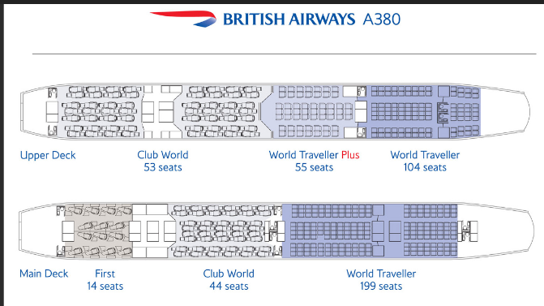
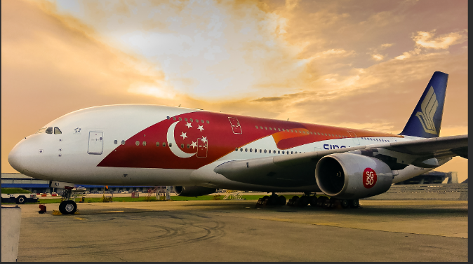

The King Of The Skies! Welcome the A380! | Aviation Site
Are you flying on an Airbus A380? WOAH!! DONT FLEX ON ME!! I NEVER FLEW ON ONE BEFORE! Anyway, do you need research? I'll help you! All the epik information is in here.
Some may ask, why am I lucky to fly on an Airbus A380?
It is because your legit flying on an aircraft where only VERY few aircrafts have it! And, you should be proud you are a Singaporean as Singapore Airlines has the Airbus A380!
Lets compare the A380 to the B747.. The differences are INSANE!
Here are the images:
The differences are really obvious. Both of them has 2 floors, but the Airbus A380 at the second floor has a longer length than the Boeing 747. [btw Qantas is a really good airline]
The Airbus A380 is the largest passenger aircraft, featuring a double-deck design and four engines. It typically seats 555 passengers, with a maximum capacity of 800. The A380 has a range of about 15,200 km (9,400 miles) and is powered by Engine Alliance GP7200 or Rolls-Royce Trent 900 engines.
With a maximum takeoff weight of around 560,000 lbs (250,000 kg) and a cruising speed of Mach 0.85 (900 km/h), it measures 72.7 meters (238 feet 7 inches) long and has a wingspan of 79.7 meters (261 feet 8 inches). Introduced in 2007, it is known for spacious cabins and was primarily used for long-haul flights. However, the COVID-19 pandemic led some airlines to retire their A380 fleets.

This is the seat layout for an Airbus A380. This airline is British Airways, which also has the Airbus A380. The seats are REALLY luxurious. So you are considered lucky if you get to fly on the Airbus A380. If you get to fly on Business Class or First Class, woah.. The A380 is going to make you REALLY shocked.
[EXTRA INFORMATION] The Airbus A380 is the largest passenger aircraft in the world, featuring a double-deck, wide-body design with four engines. It typically seats 555 passengers in a three-class configuration but can accommodate up to 800 in an all-economy layout. With a range of about 15,200 km (9,400 miles) and powered by Engine Alliance GP7200 or Rolls-Royce Trent 900 engines, the A380 has a maximum takeoff weight (MTOW) of around 560,000 lbs (250,000 kg) and a cruising speed of Mach 0.85 (900 km/h).

That is all for the A380. Move onto our last adventure, or take another look at the other aircrafts. Our last adventure is our Airbus A330.
|